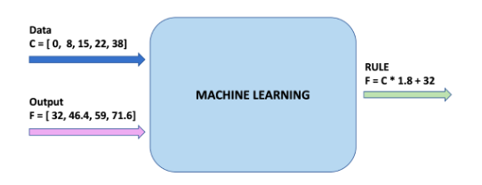

TensorFlow - Lesson 1.
EXAMPLES
When studying Machine Learning you will come across many different termis such as artificial intelligence, neural network, and deep learning. But what these terms actually mean and how
do they relate to each other?
Below we give brief description of these terms:
- Artificial Intelligence: A field of computer science that aims to make computers archieve human-style intelligence. There are many approaches to reaching this goal, including machine learning and deep learning.
- Machine Learning: A set of related techniques in which computers are trained to perform a particular task rather than by explicitly programming them.
- Neural Network: A construct in Machine Learning inspired by the network of neurons (nerve cells) in the biological brain. Neural networks are a fundamental part of deep learning, and will be covered in this course.
- Deep Learning: A subfield of machine learning that uses multi-layered neural networks. Often, "machine learning" and "deep learning" are used interchangeably.
Machine Learning and Deep Learning also have many subfields, branches, and special techniques. A notable example of this diversity is the separation of Supervised Learning and Unsupersived Learning.
To over simplify - in supervised learning you know what you want to teach the computer, while unsupervised learning is about letting the computer figure out what can be learned. Supervised learning is the most common type of machine learning, and will be the focus of this course.
TensorFlow - Lesson 2.
EXAMPLES
Recap.
You just trained your first machine learning model. We saw that by training the model with input data and the corresponding output, the model learned to multiply the input by 1.8 ant then add 32 to get the correct result.

This was really impressive considering that we only needed a few lines code:
This example is the general plan for of any machine learning program. You will use the same structure to create and trains your neural network, and use it to make predictions.10 = tf.keras.layers.Dense(units=1, input_shape=[1]) model = tf.keras.Sequential([10]) model.compile(loss='mean_squared error', optimizer=tf.keras.optimizers.Adam(0.1)) history = model.fit(celsius_q, farenheit_a, epochs=500, verbose=False) model.predict([100.0])
The training Process.
The training process (happening in model.fit(...)) is really about tuning the internal variables of the networks to the best possible values, so that they can map the input to the
output. This is achieved through an optimization process called Gradient Descent, which uses Numeric Analysis to find the best possible values to the internal variables of the model.
o do machine learning, you don't really need to understand these details. But fot the curious: gradient descent iteratively adjust parameters, nudging them in the correct direction a bit at
a time until they reach the best values. In this case "best values" means that nudging them any more would make the model perform worse. The function that measure how good or bad the model is
during each iteration is called the "loss function", and the goal of each nudge is to "minimize the loss function".